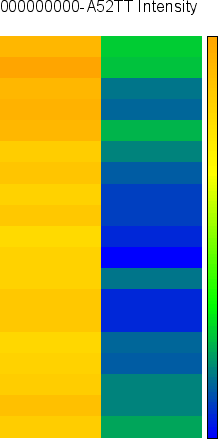
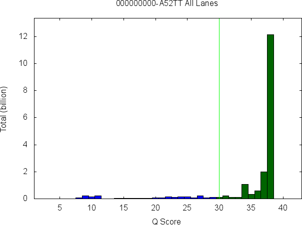
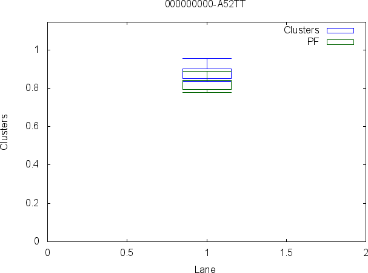
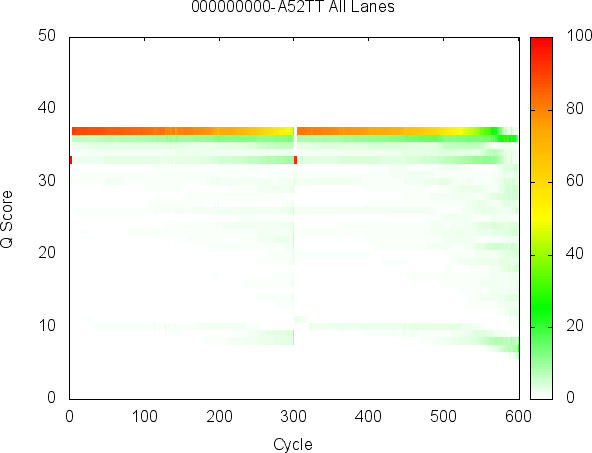

Purpose
The Illumina InterOp libraries are a set of common routines used for reading and writing InterOp metric files. These metric files are binary files produced during a run providing detailed statistics about a run. In a few cases, the metric files are produced after a run during secondary analysis (index metrics) or for faster display of a subset of the original data (collapsed quality scores).
We now support an interface to Python 3.8 to 3.13 (see contents below)
Compatibility
There are a wide number of platforms that Illumina supports and releases. The stance has always been to keep SAV backwards compatible with prior releases. This means that these common InterOp libraries need to be backwards compatible as well. There is one exception to this rule: GA systems have been excluded and are not supported with these common InterOp libraries.
NextSeq 1k/2k is supported.
Table of Contents
| Content | Description |
|---|---|
| Install | Describes how to install Illumina InterOp from binaries and the source code |
| Applications | Describes applications that transform binary InterOp data into text |
| Examples | How to examples showing how to use the Illumina InterOp C++ API |
| Modules | Short descriptions of the most useful code in the Illumina InterOp API |
| Source Code | Git repository hosted on Github.com |
| Issues | Have a question? Need a feature? Found a bug? Interact with the developers here. |
| Performance | Computation performance of the code |
| Changes | Changes between releases of the source code |
| Formats | Description of the binary formats for each InterOp file |
| Python | Step by step tutorial using the Python binding |
List of InterOp Metric Files
| Filename | Description |
|---|---|
| CorrectedIntMetricsOut.bin | Per tile per cycle per channel average intensity values |
| ErrorMetricsOut.bin | Per tile per cycle percente of incorrect calls for aligned clusters |
| ExtractionMetricsOut.bin | Per tile per cycle per channel 90th percentile of intensity and FWHM values |
| ImageMetricsOut.bin | Per tile per cycle per channel pixel value percentile for thumbnail autocontrast |
| QMetricsOut.bin | Per tile per cycle subsampled basecall quality score histogram |
| TileMetricsOut.bin | Per tile information about density, cluster count, passed filter, percent aligned |
| IndexMetricsOut.bin | Per tile per lane index sequence information |
| QMetrics2030Out.bin | Per tile per cycle Q20/Q30 scores |
| QMetricsByLaneOut.bin | Per tile per cycle Q-score histogram per lane |
| EmpiricalPhasingMetricOut.bin | Phasing weights per tile per cycle |
| ExtendedTileMetricsOut.bin | Per tile occupancy metrics |
| SummaryRunMetricsOut.bin | Per run summary metrics |
Known Limitations
There are several known limitations to the current library:
- You cannot build a shared library on Windows. Our CMake build script disallows it for good reason, it currently does not work. You can still use a static library on Windows. There is one caveat, you can build a shared library for the SWIG bindings, e.g. C#.
- Microsoft .Net less than v4.0.30319 is currently not supported (Same for Mono)
- MinGW cannot compile the code when ENABLE_BACKWARDS_COMPATIBILITY=ON
- We do not support Mono on Windows
- If both Visual Studio and Mono are installed, the build script will only use Visual Studio for C#
- We do not support 32-bit builds
- MinGW W64 4.9.x and prior will not link properly
- Visual Studio 12 2013 is not supported for the C# Bindings (Results in heap corruption)
SAV Analysis Tab
The following images were generated using the applications provided by the InterOp package. See Examples for more information.

| 
|

|
|---|---|---|

|

|